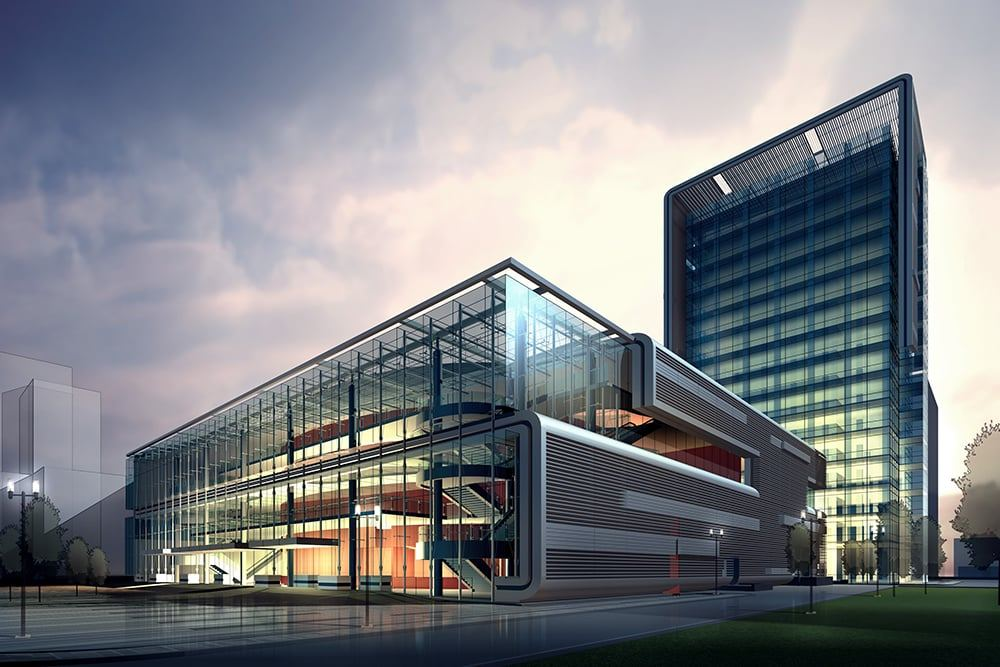

Om oss
Siden 1988 — og fortsatt i utvikling.
Datelco har siden starten i 1988 vokst og tilpasset seg nye markeder. I dag er vi en totalleverandør av elektro, EKOM og systemer.
Erfaring og utvikling
Elektro, styring og svakstrøm er fremtiden. Det er store behov i samfunnet — både i offentlige bygg og institusjoner, i næringslivet og i private hjem — for energieffektivisering, sparing, miljøfokus og sikkerhet.
Datelco er nå en anerkjent leverandør av smarte elektroløsninger for grønne bygg. Vi er eksperter på bærekraftige løsninger som elbilladere, energieffektivisering, solceller og automatisering av bygg.
Vi arbeider med Norges mest krevende kunder og samarbeidspartnere — som arkitektene i Snøhetta og eiendomsbesittere som Statsbygg.
Miljø, bærekraft og samfunnsansvar.
Vi jobber med Miljøfyrtårn og Grønt punkt, og med lærlinger og «Jenter i elektro».
Miljø
Miljøfyrtårn
Vi driver etter Miljøfyrtårn-ordningen, med krav til avfall, energi og innkjøp.
Avfall
Grønt punkt
Returnering av EE-avfall og emballasje — det som ikke skal i restavfallet.
Folk
Lærlinger
Vi tar inn lærlinger og jobber aktivt med rekruttering, også gjennom «Jenter i elektro».
Datelco AS
Vi holder til i Sandstuveien 70 F-G i Oslo, og leverer til bygg over hele Oslo-området.
- Firma
- Datelco AS
- Adresse
- Sandstuveien 70 F-G, 0680 Oslo
- Telefon
- 22 67 20 62
- E-post
- firmapost@datelco.no
- Org.nr.
- 968 366 076
- Åpningstid
- Man–fre 08:00–16:00, vakt hele døgnet
